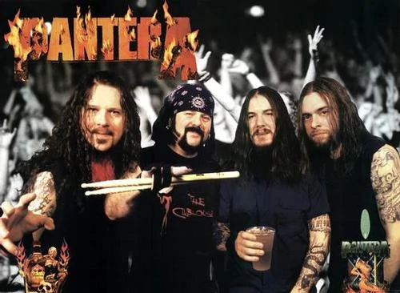

Pantera
Pantera es una banda estadounidense de groove metal fundada en 1981 por los hermanos Abbott, Darrell y Vinnie Paul, en Arlington, Texas. El bajista Tommy Bradford se uniría a inicios de 1981 con el vocalista Donnie Hart hasta finales del mismo año en el que a Tommy se le sustituiría por Rex Brown y a Donnie por Terry Glaze, quien además también era vocalista y teclista. En 1987 Phil Anselmo se convertiría en el vocalista principal del grupo. La banda permaneció activa desde 1981 hasta su disolución en 2003. El 14 de julio de 2022 se confirma una reunión de la banda con Phil Anselmo y Rex Brown, como también una gira mundial para 2023. El género del grupo fue variando con los años. Durante la década de los 80, junto al cantante Terry Glaze, el glam metal predominaba en la apariencia y estilo de la banda. Tras el despido de Glaze y la llegada de Phil Anselmo, la banda abandona sus raíces, muy influenciadas por Kiss, y se vuelca en un estilo más pesado, periodo marcado por la publicación del álbum de estudio Cowboys from Hell en 1990, que los catapultó a la fama. En 1992 lanzan su álbum Vulgar Display of Power, considerado uno de los álbumes pioneros del groove metal. En 1994, su disco Far Beyond Driven debuta en el n.º 1 del Billboard 200, y de esta forma Pantera es considerada la responsable de "mantener con vida" al heavy metal en una década en la cual el grunge y el rock alternativo alcanzaban el mainstream. A mediados de la década de los 90, Pantera comenzó a sufrir numerosas discusiones y tensiones entre sus integrantes, debido principalmente al abuso de drogas de Anselmo,4 lo cual provocó un comportamiento errático y volátil por su parte, que lo hizo distanciarse de sus compañeros. El cantante atribuye la razón de su drogadicción a un problema crónico en su columna vertebral, causado por años de violentas actuaciones sobre los escenarios, lo que le provocaba un gran dolor. En el 2001 deciden tomarse un receso, y sus integrantes toman caminos distintos. Anselmo siguió con sus proyectos que ya había fundado anteriormente, Superjoint Ritual y Down, este último al lado de su compañero Rex Brown, bajista de Pantera, y los hermanos Abbott formaron la banda Damageplan, tras esperar e intentar reiterada y fallidamente contactar con Anselmo, quien se había sumergido en sus otros proyectos.Pantera se disolvió oficialmente en el 2003.
